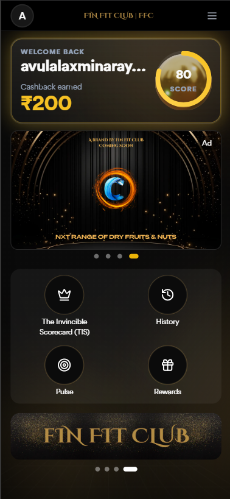
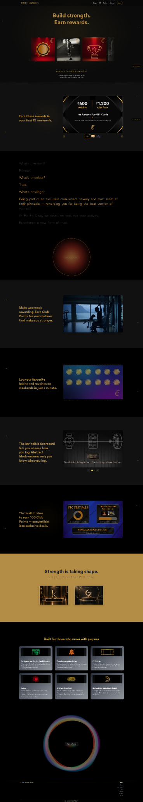
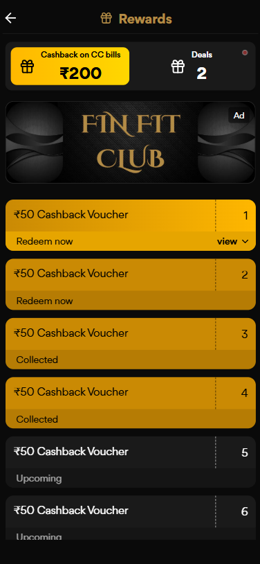
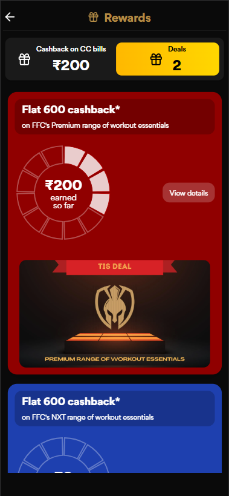
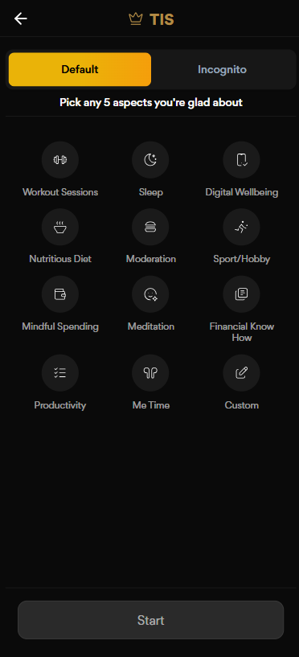
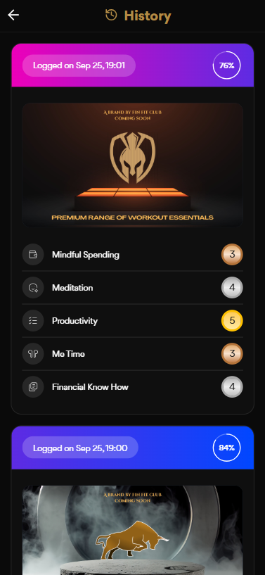
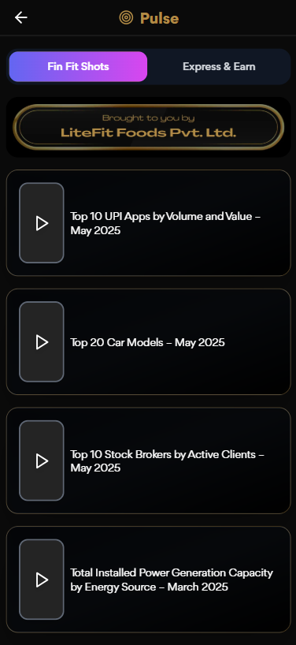
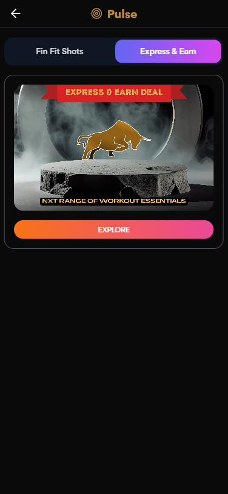

Understand value
Learn what FinFit Club offers.
Designing a financial wellness experience around progress, action and rewards.

FinFit Club combines financial wellness, goals, challenges, insights and rewards into a member experience designed for ongoing engagement.
The product brings together financial habits, progress, challenges and rewards instead of treating financial wellness as a dashboard users only visit to inspect numbers.
The website introduces the FinFit Club proposition and value; the mobile product turns that proposition into an ongoing member experience.
Learn what FinFit Club offers.
Choose a financial objective.
Challenges make progress actionable.
Scores, streaks and insights show movement.
Rewards reinforce participation.
The design challenge was to make financial wellness feel understandable and motivating without reducing it to gamification alone.
The experience needs to answer three questions quickly: Where am I? What can I do next? Why is this worth doing?
The product language therefore connects goals, challenges, progress, insights and rewards into one continuous loop.
The website and mobile experience play different roles in the same product ecosystem.
The FinFit Club website communicates the brand, financial-wellness proposition, rewards and membership value.
The mobile product carries that proposition into daily interaction: goals, challenges, score, rewards, insights and history.
Website: understand the proposition.
Product: act on it and build momentum.

The work was a product-design problem spanning structure, interaction, visual language and implementation.
Information architecture, navigation, user flows and the relationship between goals, rewards, challenges and insights.
Dashboard hierarchy, progress, reward states, challenge journeys, history and supporting product surfaces.
Reusable patterns, responsive thinking, implementation-ready design and collaboration with engineering.
The product organizes recurring member jobs into a small set of understandable destinations.
Score, progress, rewards, challenges and key actions establish what matters now.
Rewards and deals turn participation into visible value.
Goals give financial activity a concrete purpose.
Spending and learning surfaces help members interpret their activity.
Short activities make progress feel achievable.
Supporting surfaces extend the experience beyond transactions and scores.
Three decisions shaped the product experience.
Problem Financial wellness can become abstract when progress is buried in numbers.
Decision Put score, streaks, rewards and goals into the primary home hierarchy.
UI consequence The dashboard answers where the member is and what they can do next.
Problem Long-term financial goals can feel distant.
Decision Use challenges and focused actions to create smaller moments of participation.
UI consequence “Today's Challenge”, goals and journey tracking become actionable entry points.
Problem Rewards lose meaning when they are disconnected from the member journey.
Decision Keep rewards visible alongside progress and participation.
UI consequence Reward states, offers and earned value become part of the core product loop.
The home experience is designed as a decision surface, not a collection of unrelated widgets.
Score and progress create an immediate understanding of where the member stands.
Challenges and goals give the member an obvious next step.
Rewards make the benefit of participation visible.
The mobile product uses several connected surfaces to support an ongoing participation loop.


Supporting screens reinforce the same product model without requiring the home screen to carry everything.




The visual language needs to support both financial information and reward-oriented motivation without becoming noisy.
Strong hierarchy creates focus across compact mobile surfaces.
Gold/yellow accents distinguish actions and value without overwhelming the content.
Scores, streaks, completion and reward states use repeatable patterns.
Cards, tabs, navigation, challenge states and reward components form a consistent product language.
Validation focused on whether the product hierarchy made progress, action and value understandable.
Can a member understand their current state immediately?
Is there a clear next step without searching through the product?
Can members understand what they earned or can earn?
Do history, goals and challenges make progress feel connected over time?
The work connected the FinFit Club proposition to a coherent member experience across core product surfaces.
Financial information
+ rewards
+ activities
Discover
→ Act
→ Track
→ Earn
FinFit Club gave me the opportunity to connect product strategy, interaction design and visual systems around a simple idea: make financial progress easier to understand, easier to act on, and more rewarding to continue.